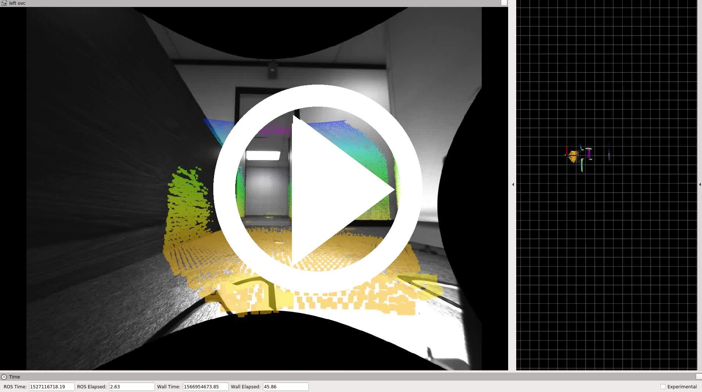
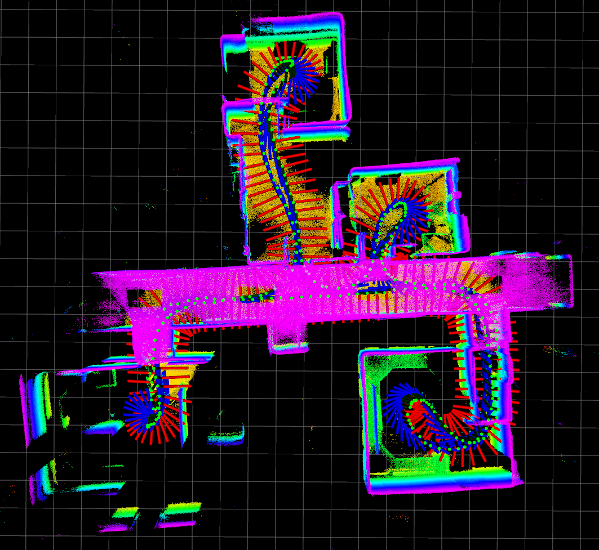

2018-05-23
2018-05-23-18-58-52
| Exploration in Building 227, probably starting 3rd floor, going down the stairs to 2nd floor. Ends in stairwell, not a loop! | ||
| sensor rig: Falcon 250, configuration 2 | location: Building 227 | |
| duration: 84s | ||
| approx path length: 69m | altitude difference: 4.71m | |
| median/maximum velocity: 0.87 / 1.35 m/s | median/maximum angular velocity: 0.30 / 1.19 rad/s | |
| environment: indoors | lighting: artificial | tags: no |
| rosbag with raw data (5.3Gb) | tar file with calibration and launch files | rosbag with odometry (14Mb) |
2018-05-23-19-05-15
| Exploration in Building 227, probably on 2nd or 3rd floor. | ||
|  | ||
|  | ||
| sensor rig: Falcon 250, configuration 2 | location: Building 227 | |
| duration: 77s | ||
| approx path length: 67m | altitude difference: 1.22m | |
| median/maximum velocity: 0.97 / 1.45 m/s | median/maximum angular velocity: 0.41 / 1.47 rad/s | |
| environment: indoors | lighting: artificial | tags: no |
| rosbag with raw data (4.9Gb) | tar file with calibration and launch files | rosbag with odometry (13Mb) |
2018-05-23-19-07-42
| Long corridor exploration in Building 227, probably on 2nd or 3rd floor. | ||
| sensor rig: Falcon 250, configuration 2 | location: Building 227 | |
| duration: 87s | ||
| approx path length: 111m | altitude difference: 2.41m | |
| median/maximum velocity: 1.42 / 1.70 m/s | median/maximum angular velocity: 0.07 / 1.48 rad/s | |
| environment: indoors | lighting: artificial | tags: no |
| rosbag with raw data (5.5Gb) | tar file with calibration and launch files | rosbag with odometry (15Mb) |